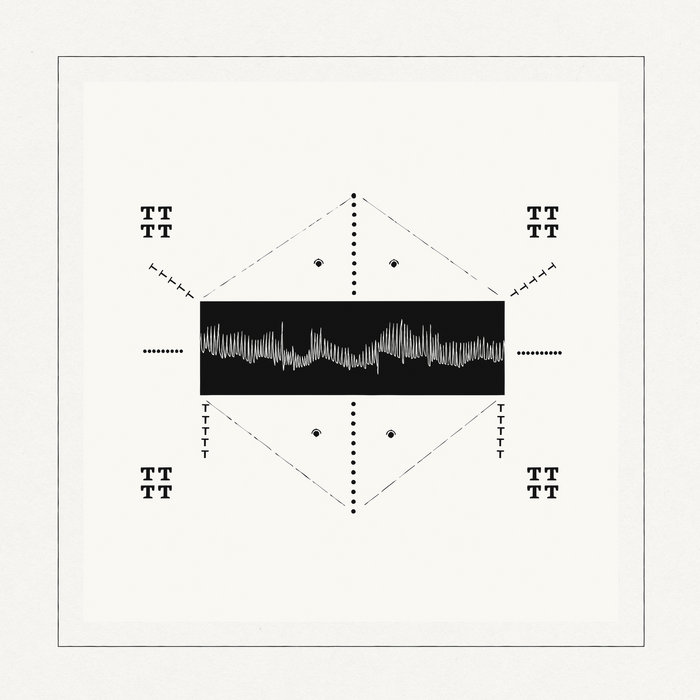

DIXON PRESENTS
SECRET WEAPONS

Innervisions anunció la decimoprimera referencia de su compilado “Secret Weapons”, incluyendo música de artistas como Denis Horvat, el propio Dixon y de los argentinos Santiago García, Kevin Di Serna y Ditian. El sello de Dixon y Ame, construido en el año 2011, es reconocido por este tipo de compilados y por sus lanzamientos de alto perfil, habiendo contado con artistas de la talla de Henrik Schwarz, Laurent Garnier y Romanthony. Ahora, los tres fundarores del sello han compilado este nuevo trabajo con tracks “para crear momentos vívidos, ya sean para el after o para altas horas de la noche”.